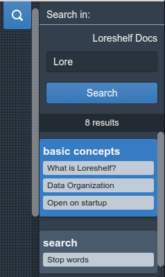

Search text
Click on the search icon which will open the side bar, enter the search text and click on Search button.
- Fulltext
- Fuzzy ( the results may differ a bit from the searched input )
- Sorted by score
- OR join is used when searching multiple terms

Search indexing
Searching through all workspace content can be expensive on time and resources. Indexing enables to optimize the fulltext search. It is configured to balance the speed and size of the search index.
- Search index doesn’t contain notebook text data
- Search index is stored for notebooks which weren’t updated for longer than a week
- Search index is redone when an old notebook is changed.
- Index of newer notebooks are re-calculated before the search when they were updated in between searches
- Search index is deleted when the workspace is unlisted
- The size of search index depends on the length of all text from all notebooks
- The size of search index is limited to 10 MB
Search score
Search score defines the order of search results.
There are several variables that have an impact on the score:
- Notecard title has higher value
- How much the searched word(s) is represented in the text
- How much the searched word(s) differs from the result
Stop words
There is a list of English words that are skipped in search.
https://github.com/loreshelf/loreshelf/blob/master/app/search/StopWords.tsx